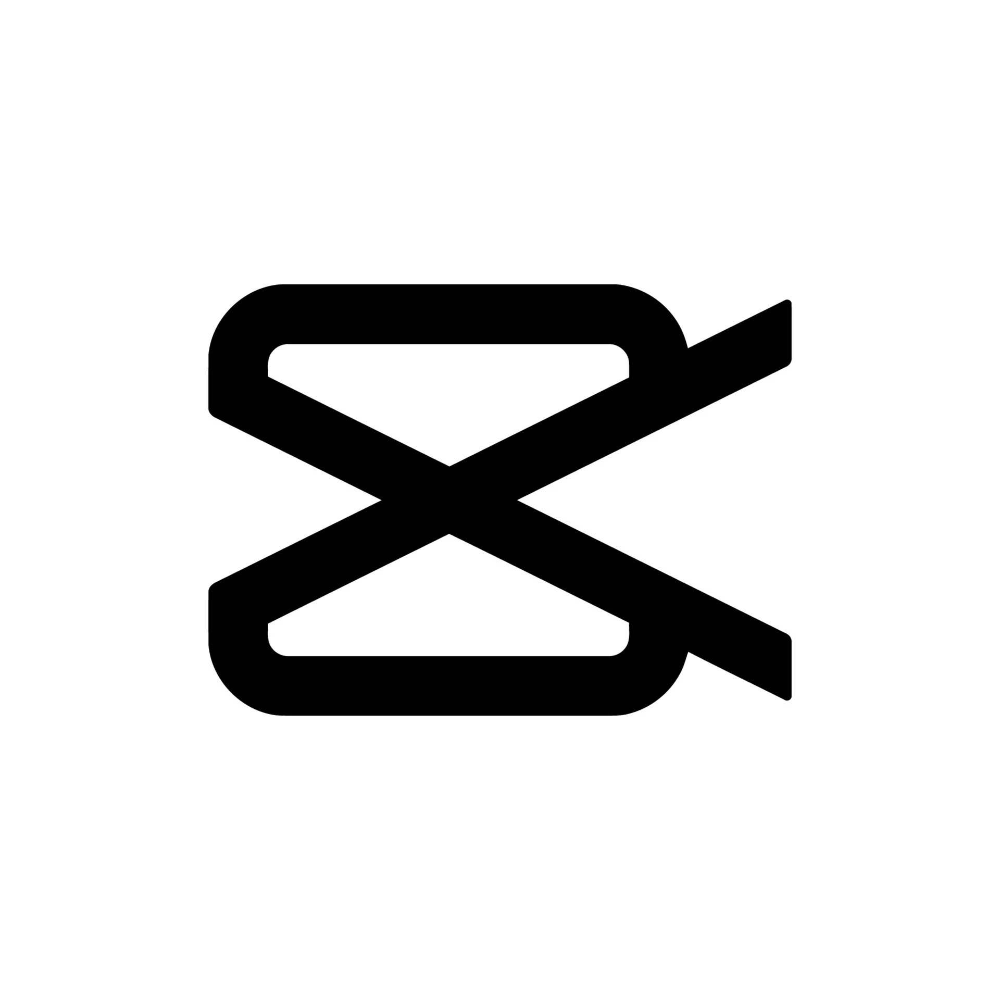

|
|
|
|---|---|
|
Fue lanzado en 2010 por el norteamericano Kevin Systrom y el brasileño Mike
Krieger, ambos ingenieros de software, actualmente es propiedad de Meta.
Tecnologías usadas |
Tiktok |
|
|---|---|
|
TikTok tiene su origen en la compañía china Bytedance, originalmente se
llamaba
Douyin (que significa sacudir la música en chino). En noviembre de 2017 Bytedance
compró la red
social norteamericana Musical.ly y de esta fusión surgió TikTok tal y como lo conocemos
ahora.
Tecnologías usadas |
|
|
|
|---|---|
|
Sus inicios se ubican en el año 2009 , según la historia oficial. Fue
una idea de
un joven emprendedor: Jan Koum, quien deseaba crear una aplicación que permitiese enviar
notificaciones a los amigos. Sin embargo, posteriormente la idea se transformó para
convertirse en una aplicación del tipo mensajería instantánea.
Tecnologías usadas en WhatsApp |
|
|
|
|---|---|
 |
La historia de Facebook comienza en 2004, cuando el entonces estudiante de
Harvard, Mark Zuckerberg, creó un sitio web llamado Facemash. El sitio web se hizo popular
en el campus, pero también se encontró en problemas porque usaba fotos de estudiantes sin su
consentimiento.
Tecnologías usadas en FB |
CapCut |
|
|---|---|
|  |
Fue lanzada en 2021 por la empresa Bitdance, la misma que desarrolló TikTok, y desde entonces se ha destacado por ser una poderosa herramienta para producir video en diferentes formatos para compartir en redes sociales incluso “su presencia en el top 10 es un reflejo de la democratización del software de producción de video
Tecnologías usadas en FB |